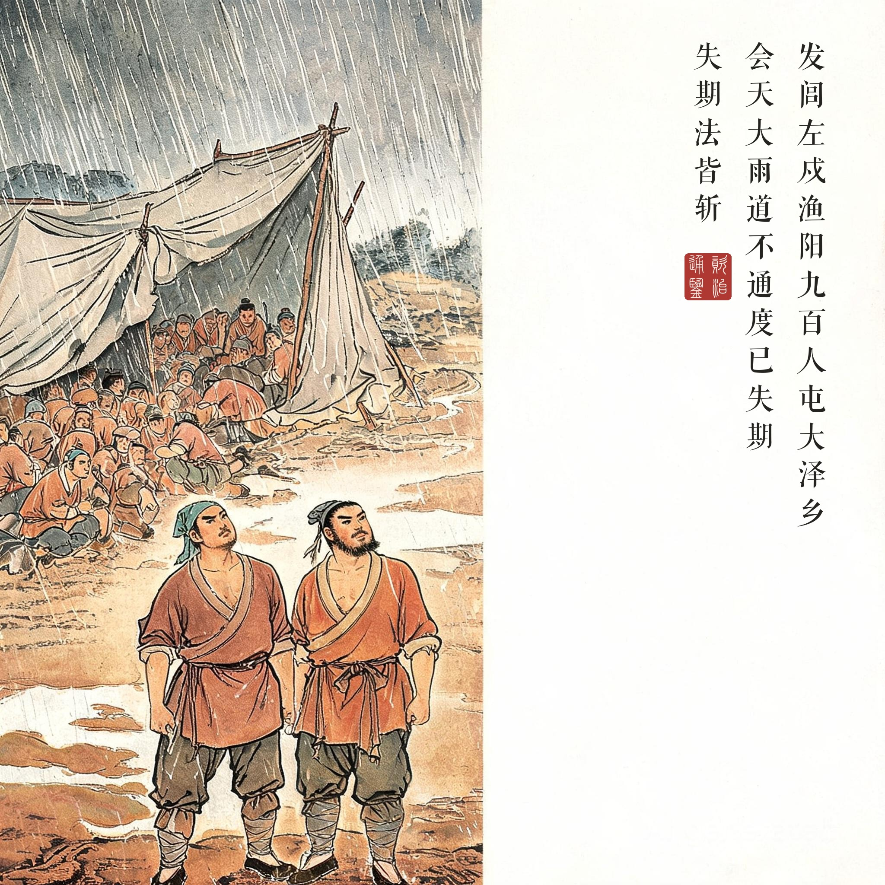
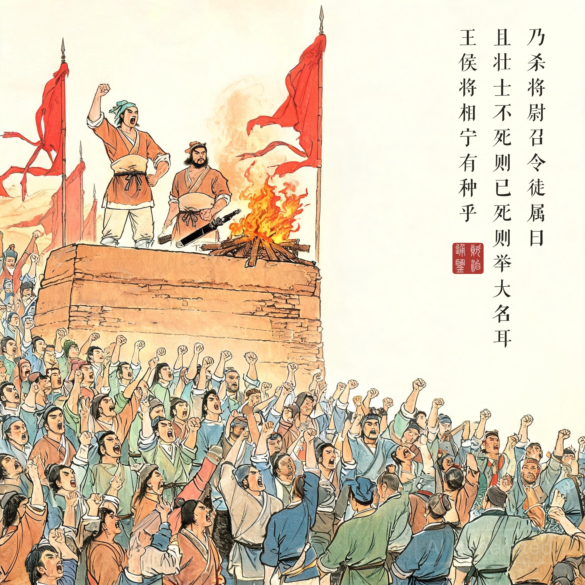
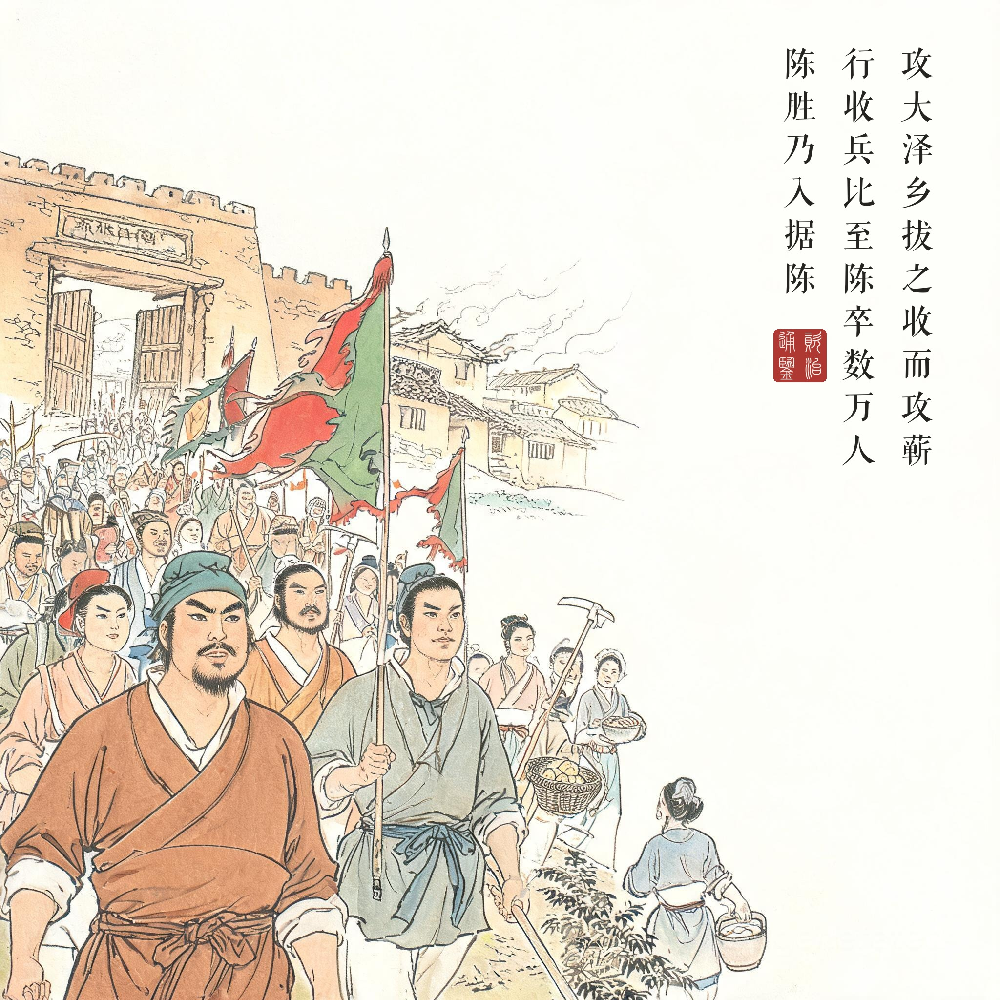
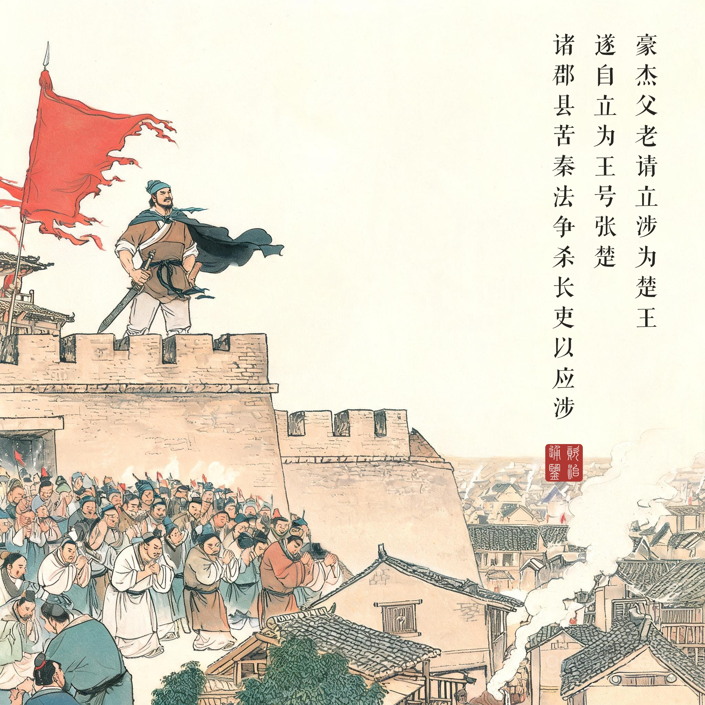

《资治通鉴 · 卷第七 · 秦纪二》二世皇帝上元年（公元前 209 年）
（据 daizhigev20《资治通鉴》底本节录）
秋，七月，阳城人陈胜、阳夏人吴广起兵于蕲。是时，发闾左戍渔阳，九百人屯大泽乡，陈胜、吴广皆为屯长。会天大雨，道不通，度已失期。失期，法皆斩。陈胜、吴广因天下之愁怨，乃杀将尉，召令徒属曰："公等皆失期当斩，假令毋斩，而戍死者固什六七。且壮士不死则已，死则举大名耳！王侯将相宁有种乎！"众皆从之。乃诈称公子扶苏、项燕，为坛而盟，称大楚；陈胜自立为将军，吴广为都尉。
攻大泽乡，拔之。收而攻蕲，蕲下。乃令符离人葛婴将兵徇蕲以东，攻铚、酂、苦、柘、谯，皆下之。行收兵，比至陈，车六七百乘，骑千馀，卒数万人。攻陈，陈守、尉皆不在，独守丞与战谯门中，不胜；守丞死，陈胜乃入据陈。
陈中豪杰父老请立涉为楚王，涉以问张耳、陈馀……陈涉不听，遂自立为王，号"张楚"。当是时，诸郡县苦秦法，争杀长吏以应涉。
秦二世元年秋七月，阳城人陈胜、阳夏人吴广在蕲地举兵。其时朝廷征发贫民戍守渔阳，九百人驻屯大泽乡，陈胜、吴广都当屯长。恰逢天降大雨，道路不通，估算已经误了期限——按秦法，误期一律处斩。陈胜、吴广趁天下愁怨，杀了押队的将尉，召集戍卒宣告："诸位都误期当斩；就算不斩，戍边本就十死六七。壮士不死则已，死就要死出个大名声！王侯将相，难道是天生的种吗！"众人齐声响应。于是假称公子扶苏、项燕之名，筑坛盟誓，号称大楚；陈胜自立为将军，吴广为都尉。
攻打大泽乡，一举而下；收兵再攻蕲县，又下。派符离人葛婴领兵向蕲以东攻取，连下铚、酂、苦、柘、谯诸地。一路收兵，到陈县时已有兵车六七百乘、骑兵千余、士卒数万。攻陈，郡守郡尉都不在，只有守丞在谯门接战，败死——陈胜于是入据陈县。
陈县豪杰父老请立陈涉为楚王。陈涉以此询问张耳、陈馀——两人劝他缓称王、先西进攻秦、立六国之后为党援，陈涉不听，自立为王，国号"张楚"。此时天下诸郡县苦于秦法，争相杀掉秦所置官吏以响应陈涉。
一句话劈开两千年。"王侯将相宁有种乎"是中国史上分量最重的问句之一。它的力量在于处境的绝境化：大雨、失期、皆斩——秦律把九百人逼到"横竖是死"的墙角，陈胜只是把这道算术题的结论说了出来："假令毋斩，而戍死者固什六七"——不反，也是死。历史的第一推动力，常常不是雄心，是无路可走。
名比刀先行。起兵前先"诈称公子扶苏、项燕"：一个是被秦二世赐死的贤明长公子，一个是楚国战神——借两个死人立一个大义，这个细节写透了起兵的全部政治学。而称王之后的转折同样快：张耳、陈馀劝他缓称王、先树党，陈涉不听——"张楚"的大旗立起来的那天，败局的种子也埋下了。通鉴下文：周文西征败于戏，吴广死于部下之手，陈涉本人被自己的车夫庄贾所杀——从大泽乡到败亡，前后不过六个月。
读画小识。第一幕的滂沱大雨与第二幕的熊熊篝火是一对镜像：把九百人逼到绝路的雨，与把人心点燃的火。第四幕城头的"张楚"大旗依底图无字规矩不书一字——旗号写在题款里："遂自立为王，号张楚。"